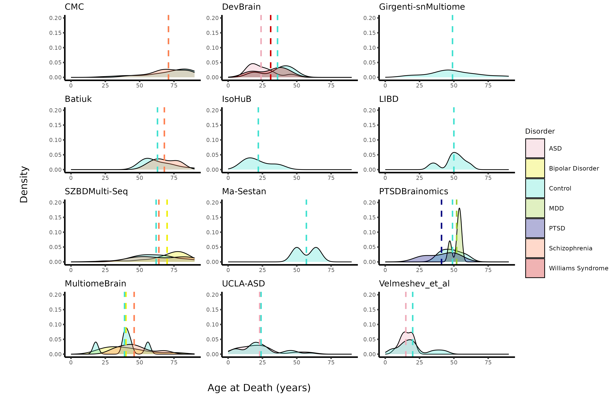

| Cohort | Patients | Mean_Age | Disorder_studied |
|---|---|---|---|
| CMC | 100 | 71 | Schizophrenia |
| DevBrain | 16 | 29 | Williams Syndrome, ASD |
| Girgenti-snMultiome | 19 | 49 | None |
| IsoHuB | 4 | 22 | None |
| LIBD | 10 | 50 | None |
| Ma_et_al | 2 | 57 | None |
| MultiomeBrain | 21 | 42 | Schizophrenia, Bipolar Disorder |
| PTSDBrainomics | 19 | 47 | MDD, PTSD |
| SZBDMulti-Seq | 72 | 65 | Bipolar Disorder, Schizophrenia |
| UCLA-ASD | 52 | 23 | ASD |
| Velmeshev_et_al | 27 | 18 | ASD |
Gene Analysis of Schizophrenia Patient Samples
Summary
TBF
Introduction
TBF
Methods
TBF
Preview of the Data
The data used is from the Emani et al. (2024) set of cohorts, with its samples. The raw data of the annotated expression matrices can be found here. All the samples come from the prefrontal cortex (PFC). The metadata contains the information of the following 12 cohorts:
- CMC
- DevBrain
- Girgenti-multiome
- IsoHuB
- LIBD
- Ma_et_al (Ma et al. 2022)
- MultiomeBrain
- PTSDBrainomics
- SZBDMulti-Seq
- ROSMAP
- UCLA-ASD
- Velmeshev_et_al (Velmeshev et al. 2019)
However, because no annotated matrices were provided for the ROSMAP cohort, these were filtered out from the metadata.
This is an overview of each cohort:
From Table 1, we can see that the CMC cohort has the biggest number of patient samples with 100 samples, followed by SZBDMulti-seq with 72. Ma_et_al has the smallest size, with only 2 samples. CMC and SZBDMulti-seq also have the highest mean of age of death at 71 years and 65 years respectively. Velmeshev_et_al has the lowest one, at 18 years. A variety of diseases are studied in these cohorts, with some cohorts studying none. These diseases include schizophrenia, autism spectrum disorder (ASD), bipolar disorder, major depressive disorder (MDD), post-traumatic stress disorder (PTSD), and Williams Syndrome.
| Cohort | Disorder | Total | Mean_Age | N_Male | N_Female |
|---|---|---|---|---|---|
| CMC | Control | 53 | 71 | 32 | 21 |
| CMC | Schizophrenia | 47 | 71 | 33 | 14 |
| DevBrain | ASD | 9 | 24 | 8 | 1 |
| DevBrain | Control | 4 | 36 | 4 | 0 |
| DevBrain | Williams Syndrome | 3 | 31 | 2 | 1 |
| Girgenti-snMultiome | Control | 19 | 49 | 15 | 4 |
| IsoHuB | Control | 4 | 22 | 2 | 2 |
| LIBD | Control | 10 | 50 | 6 | 4 |
| Ma_et_al | Control | 2 | 57 | 1 | 1 |
| MultiomeBrain | Bipolar Disorder | 10 | 40 | 6 | 4 |
| MultiomeBrain | Control | 5 | 39 | 4 | 1 |
| MultiomeBrain | Schizophrenia | 6 | 46 | 3 | 3 |
| PTSDBrainomics | Control | 9 | 49 | 7 | 2 |
| PTSDBrainomics | MDD | 4 | 52 | 3 | 1 |
| PTSDBrainomics | PTSD | 6 | 41 | 5 | 1 |
| SZBDMulti-Seq | Bipolar Disorder | 24 | 70 | 12 | 12 |
| SZBDMulti-Seq | Control | 24 | 62 | 12 | 12 |
| SZBDMulti-Seq | Schizophrenia | 24 | 64 | 12 | 12 |
| UCLA-ASD | ASD | 27 | 23 | 22 | 5 |
| UCLA-ASD | Control | 25 | 24 | 21 | 4 |
| Velmeshev_et_al | ASD | 13 | 15 | 10 | 3 |
| Velmeshev_et_al | Control | 14 | 20 | 9 | 5 |
Table 2 indicates the number of patients per condition in each cohort. The CMC cohort has the highest numbers, with 53 control samples and 47 schizophrenia samples. The UCLA-ASD is second, with 27 ASD samples and 25 control samples. The mean of age at death and the distribution of the biological sexes is also shown in this table.
It must be noted that many patients’ age at death was marked as “89+”. In order to determine the age distribution and the mean age of death, these values were converted to “89”. The number of samples that were marked as “89+” from the Schizophrenia cohorts is in Table 3.
| Cohort | Disorder | Plus89_patients |
|---|---|---|
| CMC | Control | 9 |
| CMC | Schizophrenia | 5 |
| SZBDMulti-Seq | Bipolar Disorder | 1 |
| SZBDMulti-Seq | Control | 1 |
| SZBDMulti-Seq | Schizophrenia | 2 |
The age distribution of each condition per cohort was also examined.

In Figure 1, the dotted vertical lines are the mean of the age at death for each condition.
The number of genes and single cells per each Schizophrenia cohort was also looked at in Table 4. The number of genes is per sample, whereas the number of cells is the total number for all samples in a cohort.
| Cohort | Genes | Total_Cells |
|---|---|---|
| CMC | 33792 | 456560 |
| SZBDMulti-Seq | 34361 | 603281 |
| MultiomeBrain | 33822 | 134666 |
The number of genes is quite similar across 3 cohorts. SZBDMulti-Seq has the highest number of total cells, at 603281. MultiomeBrain has the lowest number of total cells, at 134666.
The next thing that was looked into was the number of cells per cell-type per patient. In Figure 2, we can see that L2/3 intratelencephalic excitatory neurons have the highest frequency (279756 in total), especially by the SZBDMulti-Seq cohort. This is followed by oligodendrocytes with 221554 counts in total. Sst Chodl inhibitory neurons have the lowest count at 746 counts. Smooth muscle cells (SMC) have the second lowest count, at 944.
In Figure 3, the sequencing depth of each cell was investigated. These results were grouped together per cell type in the following plot, and colored by cohort.
Lastly, the difference in cell type abundance per condition was investigated in each cohort in Figure 4.

References
Emani, Prashant S., Jason J. Liu, Declan Clarke, Matthew Jensen, Jonathan Warrell, Chirag Gupta, Ran Meng, et al. 2024. “Single-Cell Genomics and Regulatory Networks for 388 Human Brains.” Science 384 (6698): eadi5199. https://doi.org/10.1126/science.adi5199.
Ma, Shaojie, Mario Skarica, Qian Li, Chuan Xu, Ryan D. Risgaard, Andrew T. N. Tebbenkamp, Xoel Mato-Blanco, et al. 2022. “Molecular and Cellular Evolution of the Primate Dorsolateral Prefrontal Cortex.” Science 377 (6614): eabo7257. https://doi.org/10.1126/science.abo7257.
Velmeshev, Dmitry, Lucas Schirmer, Diane Jung, Maximilian Haeussler, Yonatan Perez, Simone Mayer, Aparna Bhaduri, Nitasha Goyal, David H. Rowitch, and Arnold R. Kriegstein. 2019. “Single-Cell Genomics Identifies Cell Type–Specific Molecular Changes in Autism.” Science 364 (6441): 685–89. https://doi.org/10.1126/science.aav8130.